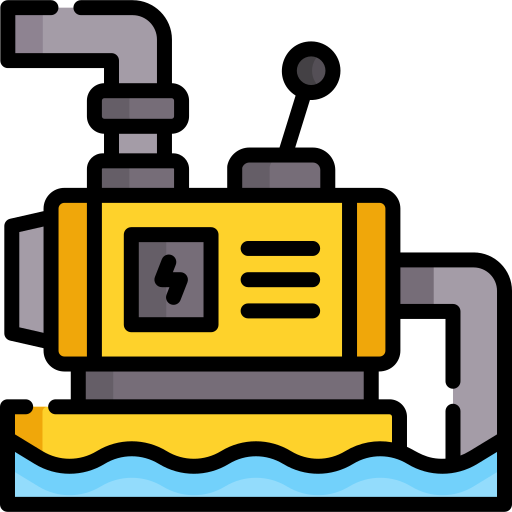

<!DOCTYPE html>
<html lang="th">
<head>
    <meta charset="UTF-8">
    <meta name="viewport" content="width=device-width, initial-scale=1.0, maximum-scale=1.0, user-scalable=no" />
    <title>ระบบแผนที่ เมืองทองธานี (MTT)</title>

    <link rel="stylesheet" href="https://unpkg.com/leaflet@1.9.4/dist/leaflet.css" />
    <script src="https://unpkg.com/leaflet@1.9.4/dist/leaflet.js"></script>
    <script src="https://cdnjs.cloudflare.com/ajax/libs/leaflet-omnivore/0.3.4/leaflet-omnivore.min.js"></script>
    <script src="https://unpkg.com/leaflet-polylinedecorator/dist/leaflet.polylineDecorator.js"></script>

    <style>
        body { margin: 0; padding: 0; font-family: 'Sarabun', Tahoma, sans-serif; }
        #map { height: 100vh; width: 100vw; }

        /* กล่องสัญลักษณ์มุมขวาล่าง */
        .legend-box {
            background: white; padding: 10px 15px; border-radius: 5px;
            box-shadow: 0 0 15px rgba(0,0,0,0.2); line-height: 1.5rem;
            color: #333; font-size: 14px;
        }
        .legend-box h4 { margin: 0 0 10px 0; font-size: 16px; text-align: center; }
        .color-box {
            display: inline-block; width: 20px; height: 10px;
            margin-right: 8px; border: 1px solid #999;
        }
        
        /* 📍 แผงข้อมูลมุมขวาบน (แทนที่ Popup) */
        .info-panel-container {
            display: flex;
            flex-direction: column;
            gap: 10px;
            max-height: 80vh;
            overflow-y: auto;
            padding: 5px;
        }
        .info-card {
            background: rgba(255, 255, 255, 0.95);
            border-left: 6px solid;
            padding: 12px 30px 12px 15px;
            border-radius: 6px;
            box-shadow: 0 4px 15px rgba(0,0,0,0.3);
            width: 220px;
            font-size: 13px;
            position: relative;
        }
        .info-card h4 { margin: 0 0 5px 0; font-size: 15px; color: #222; }
        .info-card p { margin: 0; color: #555; }
        .close-btn {
            position: absolute;
            top: 8px;
            right: 10px;
            cursor: pointer;
            color: #999;
            font-size: 16px;
        }
        .close-btn:hover { color: #FF3333; }

        /* โค้ดอนิเมชันวิ่งเส้นประ */
        .flow-line {
            stroke-dasharray: 12, 12 !important; 
            animation: flow-animation 1s linear infinite; 
        }
        @keyframes flow-animation {
            0% { stroke-dashoffset: 24; }
            100% { stroke-dashoffset: 0; }
        }
    </style>
</head>
<body>

    <div id="map"></div>

    <script>
        var map = L.map('map', {
            center: [13.913, 100.540], 
            zoom: 14,
            maxBoundsViscosity: 1.0 
        });

        L.tileLayer('https://{s}.tile.openstreetmap.org/{z}/{x}/{y}.png', {
            attribution: '© OpenStreetMap'
        }).addTo(map);

        var pumpIcon = L.icon({
            iconUrl: 'pump.png', 
            iconSize: [30, 30], iconAnchor: [15, 30] 
        });

        // ==========================================
        // ข้อมูล Layer ทั้งหมด (อัปเดตข้อมูล info ปั๊มน้ำแล้ว)
        // ==========================================
        var layerConfig = {
            "Klong bangpood": { name: "คลองบางพูด", color: "#00FFFF", info: "คลองรับส่งน้ำโดยเฉพาะพื้นที่อำเภอปากเกร็ด", reverse: true },
            "Klong Soui": { name: "คลองส่วย", color: "#00FFFF", info: "สถานะ: คลองเลียบคลองประปา" },
            "Untitled path": { name: "คลองบางพัง", color: "#00FFFF", info: "สถานะ: คลอง", reverse: true },
            "klong Banmai": { name: "คลองบ้านใหม่", color: "#00FFFF", info: "สถานะ: คลอง" },
            "Klog Ban Kao": { name: "คลองบ้านเก่า", color: "#00FFFF", info: "สถานะ: คลอง" },
            "Wat Saluk": { name: "ท่อระบายน้ำซอยวัดสลักเหนือ", color: "#0000FF", info: "สถานะ: ท่อระบายน้ำ ขนาด ....." },
            "Tiwanon Pipe": { name: "ท่อระบายน้ำบนถนนติวานนท์ฝั่งเมืองทอง ขนาด .....", color: "#0000FF", info: "สถานะ: ท่อระบายน้ำ ขนาด ....." },
            "Tiwanon Pipe 2": { name: "ท่อระบายน้ำบนถนนติวานนท์ฝั่งวัดสลักเหนือ ขนาด .....", color: "#00FFFF", info: "สถานะ: ท่อระบายน้ำ ขนาด ....." },
            "black turtle": { name: "ลำรางหนองเต่าดำ", color: "#00FFFF", info: "สถานะ: ลำราง" },
            "popular pump 4": { name: "ระบบระบายน้ำ popular ไปยัง สถานีสูบน้ำ 4 ", color: "#FFFF00", info: "สถานะ: ท่อระบายน้ำ" },
            "Pump 4 2": { name: "ระบบระบายน้ำ popular ไปยัง สถานีสูบน้ำ 4 ", color: "#FFFF00", info: "สถานะ: ท่อระบายน้ำ" },
            "Pump 4 -3": { name: "ระบบระบายน้ำ popular ไปยัง สถานีสูบน้ำ 4 ", color: "#FFFF00", info: "สถานะ: ท่อระบายน้ำ" },
            "Pump 4 -4": { name: "ระบบระบายน้ำ popular ไปยัง สถานีสูบน้ำ 4 ", color: "#FFFF00", info: "สถานะ: ท่อระบายน้ำ" },
            "Pump 3-1": { name: "ระบบระบายน้ำ popular ไปยัง สถานีสูบน้ำ 3 ", color: "#FFFF00", info: "สถานะ: ท่อระบายน้ำ" },
            "Pump 3-2": { name: "ระบบระบายน้ำ ไปยัง สถานีสูบน้ำ 3 ", color: "#FFFF00", info: "สถานะ: ท่อระบายน้ำ" },
            "Pump 5-1": { name: "ระบบระบายน้ำ สถานีสูบน้ำ 5 ", color: "#FFFF00", info: "สถานะ: ท่อระบายน้ำ" },
            "Pump 5-2": { name: "ระบบระบายน้ำ สถานีสูบน้ำ 5 ", color: "#FFFF00", info: "สถานะ: ท่อระบายน้ำ" },
            "Pump 5 -3": { name: "ระบบระบายน้ำ สถานีสูบน้ำ 5 ", color: "#FFFF00", info: "สถานะ: ท่อระบายน้ำ" },
            "Retention - Pump 3": { name: "ระบบระบายน้ำ รีเทนชั่นแทงค์ไปยัง สถานีสูบ 3 ", color: "#FFFF00", info: "สถานะ: ท่อระบายน้ำ" },
            "Retention - 1": { name: "ระบบระบายน้ำไปยังรีเทนชั่นแทงค์", color: "#FFFF00", info: "สถานะ: ท่อระบายน้ำ" },
            "IEC - PUMP 3": { name: "ระบบระบายน้ำไปยัง สถานีสูบ 3 ", color: "#FFFF00", info: "สถานะ: ท่อระบายน้ำ" },
            "Lake to Pump 10": { name: "ระบบระบายน้ำทะเลสาบ ไปยัง สถานีสูบ 10 ", color: "#FFFF00", info: "สถานะ: ท่อระบายน้ำ" },
            "BS - Pump 2": { name: "ระบบระบายน้ำ ไปยัง สถานีสูบ 2 ", color: "#FFFF00", info: "สถานะ: ท่อระบายน้ำ" },
            "BS-mST 7": { name: "ระบบระบายน้ำ ไปยัง สถานีสูบ มสธ 7", color: "#FFFF00", info: "สถานะ: ท่อระบายน้ำ" },
            "bs-mst 8": { name: "ระบบระบายน้ำ ไปยัง สถานีสูบ มสธ 7", color: "#FFFF00", info: "สถานะ: ท่อระบายน้ำ" },
            "bs-Tiwanon": { name: "ระบบระบายน้ำ ไปยัง ถนนติวานนท์", color: "#FFFF00", info: "สถานะ: ท่อระบายน้ำ" },
            "C12-P1": { name: "ระบบระบายน้ำซอย C12  ", color: "#FFFF00", info: "สถานะ: ท่อระบายน้ำ", reverse: true },
            "bs - pump 2": { name: "ระบบระบายน้ำ ไปยัง สถานีสูบ 2 ", color: "#FFFF00", info: "สถานะ: ท่อระบายน้ำ" },
            "BS-MST 1,2": { name: "ระบบระบายน้ำ ไปยัง สถานีสูบ มสธ 1,2", color: "#FFFF00", info: "สถานะ: ท่อระบายน้ำ" },
            "IF-R": { name: "ระบบระบายน้ำแยก IF-วงเวียน Impact", color: "#FFFF00", info: "สถานะ: ท่อระบายน้ำ" },
            "Lake - IF": { name: "ระบบระบายน้ำทะเลสาบผ่าน The Laken", color: "#FFFF00", info: "สถานะ: ท่อระบายน้ำ" },
            "Lake - IF2": { name: "ระบบระบายน้ำทะเลสาบผ่าน The Laken", color: "#FFFF00", info: "สถานะ: ท่อระบายน้ำ" },
            "Lake - IF3": { name: "ระบบระบายน้ำทะเลสาบผ่าน The Laken", color: "#FFFF00", info: "สถานะ: ท่อระบายน้ำ" },
            "BS- Tiwanon 2": { name: "ระบบระบายน้ำ ไปยัง ถนนติวานนท์", color: "#FFFF00", info: "สถานะ: ท่อระบายน้ำ" },
            
            "PS Wat Koa": { name: "สถานีสูบน้ำคลองบางพูด วัดเกาะพญาเจ๋ง 1", info: "จำนวนเครื่องสูบน้ำ 4 เครื่อง อัตราการระบายสูงสุด 8 cu.m./s", customIcon: pumpIcon },
            "PS Parkkret 13": { name: "สถานีสูบคลองบางพูด ปากเกร็ด 13", info: "จำนวนเครื่องสูบน้ำ 4 เครื่อง อัตราการระบายสูงสุด 8 cu.m./s", customIcon: pumpIcon },
            "PS Klong Suai": { name: "สถานีสูบคลองบางพูด เชื่อมคลองส่วย", info: "จำนวนเครื่องสูบน้ำ 2 เครื่อง  อัตราการระบายสูงสุด 1 cu.m/s", customIcon: pumpIcon },
            "PS4": { name: "สถานีสูบน้ำ 4", info: "จำนวนเครื่องสูบน้ำ 2 เครื่อง อัตราการระบายสูงสุด 1.03 cu.m./s", customIcon: pumpIcon },
            "PS Klong - banmai": { name: "สถานีสูบน้ำคลองส่วย - คลองบ้านใหม่", info: "จำนวนเครื่องสูบน้ำ 2 เครื่อง อัตราการระบายสูงสุด 2 cu.m/s", customIcon: pumpIcon },
            "PS Wat Saluk": { name: "สถานีสูบน้ำวัดสลักเหนือ", info: "จำนวนเครื่องสูบน้ำ 3 เครื่อง อัตราการระบายสูงสุด 2.4 cu.m/s", customIcon: pumpIcon },
            "PS Bangplung": { name: "สถานีสูบน้ำปากคลองบางพัง", info: "จำนวนเครื่องสูบน้ำ 4 เครื่อง อัตราการระบายสูงสุด 8 cu.m/s", customIcon: pumpIcon },
            "MP - BS": { name: "เครื่องสูบน้ำ Mobile ติวานนท์", info: "จำนวนเครื่องสูบน้ำ 1 เครื่อง อัตราการระบายสูงสุด 0.30 cu.m/s", customIcon: pumpIcon },
            "MP-BS": { name: "เครื่องสูบน้ำ Mobile ติวานนท์", info: "จำนวนเครื่องสูบน้ำ 1 เครื่อง อัตราการระบายสูงสุด 0.75 cu.m/s", customIcon: pumpIcon },
            "C12-1": { name: "สถานีสูบน้ำ C12-No.1", info: "จำนวนเครื่องสูบน้ำ 1 เครื่อง อัตราการระบายสูงสุด 0.065 cu.m/s", customIcon: pumpIcon },
            "C12-2": { name: "สถานีสูบน้ำ C12-No.2", info: "จำนวนเครื่องสูบน้ำ 1 เครื่อง อัตราการระบายสูงสุด 0.065 cu.m/s", customIcon: pumpIcon },
            "PS2": { name: "สถานีสูบน้ำ 2", info: "จำนวนเครื่องสูบน้ำ 3 เครื่อง อัตราการระบายสูงสุด 1 cu.m/s", customIcon: pumpIcon },
            "PS3": { name: "สถานีสูบน้ำ 3", info: "จำนวนเครื่องสูบน้ำ 3 เครื่อง อัตราการระบายสูงสุด 1 cu.m/s", customIcon: pumpIcon },
            "PS5": { name: "สถานีสูบน้ำ 5", info: "จำนวนเครื่องสูบน้ำ 2 เครื่อง อัตราการระบายสูงสุด 1.86 cu.m/s", customIcon: pumpIcon },
            "PS9": { name: "สถานีสูบน้ำ 9", info: "จำนวนเครื่องสูบน้ำ 2 เครื่อง อัตราการระบายสูงสุด 1.86 cu.m/s", customIcon: pumpIcon },
            "PS 10": { name: "สถานีสูบน้ำ 10", info: "จำนวนเครื่องสูบน้ำ 2 เครื่อง อัตราการระบายสูงสุด 1.255 cu.m/s", customIcon: pumpIcon },
            "MST1": { name: "สถานีสูบน้ำ มสธ1", info: "จำนวนเครื่องสูบน้ำ 3 เครื่อง อัตราการระบายสูงสุด 200.10 cu.m/s", customIcon: pumpIcon },
            "MST2": { name: "สถานีสูบน้ำ มสธ2", info: "จำนวนเครื่องสูบน้ำ 3 เครื่อง อัตราการระบายสูงสุด 200.10 cu.m/s", customIcon: pumpIcon },
            "MST-7": { name: "สถานีสูบน้ำ มสธ7", info: "จำนวนเครื่องสูบน้ำ 2 เครื่อง อัตราการระบายสูงสุด 283.67 cu.m/s", customIcon: pumpIcon },
            "MST-8": { name: "สถานีสูบน้ำ มสธ8", info: "จำนวนเครื่องสูบน้ำ 2 เครื่อง อัตราการระบายสูงสุด 283.67 cu.m/s", customIcon: pumpIcon }
        };

        // ==========================================
        // UI แผงด้านขวา
        // ==========================================
        var infoControl = L.control({ position: 'topright' });
        infoControl.onAdd = function (map) {
            var div = L.DomUtil.create('div', 'info-panel-container');
            div.id = 'info-panel';
            L.DomEvent.disableClickPropagation(div);
            return div;
        };
        infoControl.addTo(map);

        var legend = L.control({ position: 'bottomright' });
        legend.onAdd = function (map) {
            var div = L.DomUtil.create('div', 'legend-box');
            div.innerHTML = `
                <h4>สัญลักษณ์</h4>
                <div><span class="color-box" style="background: #00FFFF;"></span> คลอง / ลำราง</div>
                <div><span class="color-box" style="background: #0000FF;"></span> ท่อระบายน้ำหลัก</div>
                <div><span class="color-box" style="background: #FFFF00;"></span> ระบบระบายน้ำภายใน</div>
                <div> สถานีสูบน้ำ</div>
            `;
            return div;
        };
        legend.addTo(map);

        // ==========================================
        // โค้ดวิ่งเส้นประแบบ Multi-Choice 
        // ==========================================
        var activeSequence = []; 

        function updateFlowSequence() {
            activeSequence.forEach(function(item, index) {
                if (item.layer.flowTimeout) clearTimeout(item.layer.flowTimeout);
                
                item.layer.flowTimeout = setTimeout(function() {
                    if (item.layer.getElement()) {
                        item.layer.getElement().classList.add('flow-line');
                        item.layer.setStyle({ weight: 6, color: '#FF3333' }); 
                    }
                }, index * 800); 
            });
        }

        // 📍 ฟังก์ชันกากบาทปิดการ์ด
        window.removeFlowItem = function(stamp) {
            var index = activeSequence.findIndex(function(item) { return L.stamp(item.layer) == stamp; });
            if (index > -1) {
                var item = activeSequence[index];
                
                // ลบการ์ด UI
                var card = document.getElementById('card_' + stamp);
                if (card) card.remove();
                
                // คืนค่าเส้นกลับเป็นปกติ
                if (item.layer.flowTimeout) clearTimeout(item.layer.flowTimeout);
                if (item.layer.getElement()) {
                    item.layer.getElement().classList.remove('flow-line');
                    item.layer.setStyle({ weight: 4, color: item.color });
                }
                
                activeSequence.splice(index, 1);
                updateFlowSequence();
            }
        };

        // คลิกล้างกระดานที่แผนที่
        map.on('click', function() {
            var currentActive = activeSequence.slice(); 
            currentActive.forEach(function(item) {
                window.removeFlowItem(L.stamp(item.layer));
            });
        });

        // ==========================================
        // โหลด KML
        // ==========================================
        var kmlLayer = omnivore.kml('MTT.kml').addTo(map);

        kmlLayer.on('ready', function() {
            var kmlBounds = kmlLayer.getBounds();
            map.fitBounds(kmlBounds, { padding: [20, 20] });

            setTimeout(function() {
                var currentBounds = map.getBounds();
                map.setMaxBounds(currentBounds.pad(0.05)); 
                map.setMinZoom(map.getZoom());
            }, 500);

            kmlLayer.eachLayer(function(layer) {
                if (!layer.feature || !layer.feature.properties) return;
                var kmlName = layer.feature.properties.name; 

                if (layerConfig[kmlName]) {
                    var config = layerConfig[kmlName];

                    if (layer instanceof L.Marker) {
                        if (config.customIcon) layer.setIcon(config.customIcon);
                        
                        layer.on('click', function(e) {
                            L.DomEvent.stopPropagation(e.originalEvent);
                            handleLayerClick(layer, config);
                        });
                    } else {
                        if (layer.setStyle) {
                            layer.setStyle({ color: config.color, weight: 4, opacity: 0.9 });
                            
                            if (layer instanceof L.Polyline && !(layer instanceof L.Polygon)) {
                                
                                if (config.reverse) {
                                    var latlngs = layer.getLatLngs();
                                    if (latlngs.length > 0 && Array.isArray(latlngs[0])) {
                                        layer.setLatLngs(latlngs.map(function(arr) { return arr.slice().reverse(); }));
                                    } else {
                                        layer.setLatLngs(latlngs.slice().reverse());
                                    }
                                }

                                L.polylineDecorator(layer, {
                                    patterns: [{
                                        offset: 25, repeat: 80, 
                                        symbol: L.Symbol.arrowHead({
                                            pixelSize: 12, polygon: true, 
                                            pathOptions: { stroke: true, weight: 1, color: config.color, fillOpacity: 1 }
                                        })
                                    }]
                                }).addTo(map);

                                // 📍 รับคลิกที่เส้น
                                layer.on('click', function(e) {
                                    L.DomEvent.stopPropagation(e.originalEvent);
                                    handleLayerClick(layer, config);
                                });
                            }
                        }
                    }
                } else {
                    if (layer.setStyle && !(layer instanceof L.Marker)) {
                        layer.setStyle({ color: "gray", weight: 3 });
                    }
                }
            });
        });

        // 📍 สร้างการ์ดขวาบน
        function handleLayerClick(layer, config) {
            var stamp = L.stamp(layer);
            var exists = activeSequence.some(function(item) { return L.stamp(item.layer) == stamp; });
            
            if (!exists) {
                var panel = document.getElementById('info-panel');
                if (panel) {
                    var card = document.createElement('div');
                    card.className = 'info-card';
                    card.id = 'card_' + stamp;
                    card.style.borderLeftColor = config.color || '#333';
                    card.innerHTML = `
                        <span class="close-btn" onclick="removeFlowItem(${stamp})">✖</span>
                        <h4>${config.name}</h4>
                        <p>${config.info}</p>
                    `;
                    panel.appendChild(card);
                }

                activeSequence.push({ layer: layer, color: config.color });
                updateFlowSequence();
            }
        }

    </script>
</body>
</html>
